Objective
To learn more kinetic quantities
- Impulse momentum relationship
- Friction
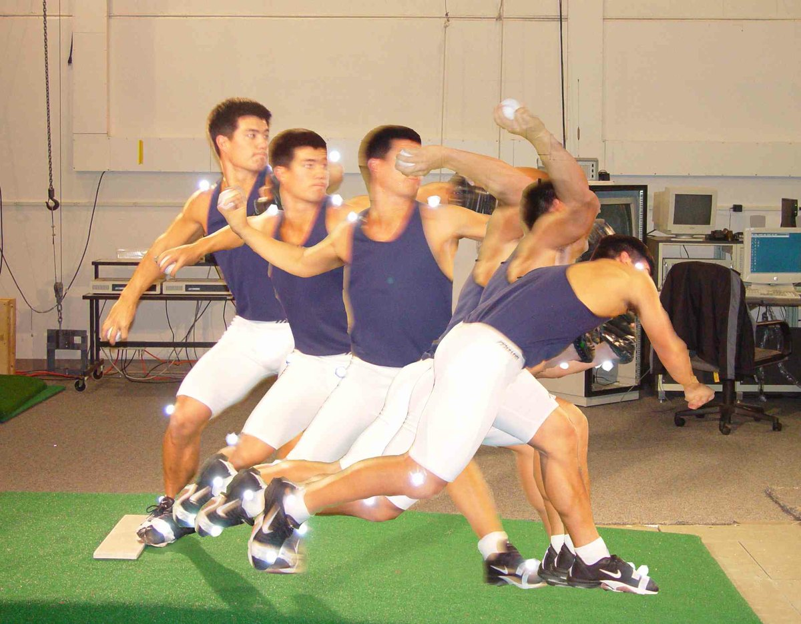
Linear Kinetics
- From Newton’s first 2 laws we learned that an external force is required to change the state of object motion (N1 and N2 [F=ma]) and an object in motion has momentum (N1).
- But how does the momentum of an object change?
- F=ma (N2) which means that a force will cause an object to accelerate.
- Therefore force is proportional to acceleration
- change in velocity is the area under an acceleration time graph.
- The time that the object is accelerating and the magnitude of the acceleration will determine the velocity of the object
Linear Kinetics
- If we want to consider change in momentum we need to multiply both sides by mass
- We know that mΔv is momentum and F = ma
- Therefore
F = ma → Ft = mΔv
- Impulse is a measure of a force applied for a certain amount of time
- Impulse = Force × time
- I = Ft
- The net force acting over some time will cause a change in momentum.
- impulse is the area under a force time graph
a = Δv / t
F = m(Δv / t)
Ft = mΔv
Impulse–momentum relationship
changes in the momentum of a system depend on:
- the magnitude of external forces, and
- the time over which the forces act
Therefore an impulse can cause a change in momentum
SI Units: N·s · Impulse is a vector
Ft = mΔv
Ft = (mv)final − (mv)initial
Impulse is an area
Linear Kinetics
Example Problem
During a bobsled race, two crew members push a 90 kg sled with an average force of 100 N over a period of 7 s before jumping in. Assuming that the sled started at rest, what is the bobsled’s velocity after 7 seconds?
Linear Kinetics
Solution
given in this question:
- F = 100 N
- t = 7 s
- m = 90 kg
Ft = (mv)final – (mv)initial
(100 N)(7 s) = (90 kg)v – (90 kg)(0 m/s)
v = 7.78 m/s
The bobsled’s velocity is 7.78 m/s in the direction of force application
Impulse in human movement
Impulse = Force × time
= Δmomentum
- During human movement we are constantly trying to change the velocity of something.
- Walking (change the velocity of our center of gravity)
- Sports (change the velocity of our whole body or object)
- In these activities the force profiles can be explained by the impulse momentum relationship.
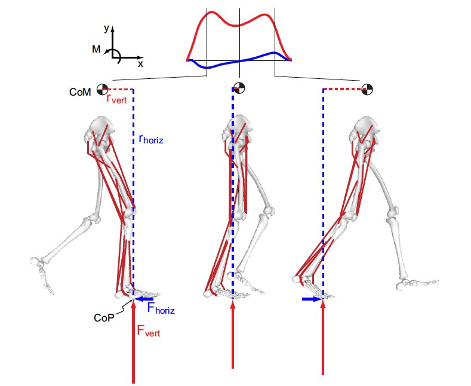
Positions during a jump
Here are some basic positions during a jump that we will use to discuss kinetic and kinematic data during jumping
Linthorne, Am. J. Phys. 2001
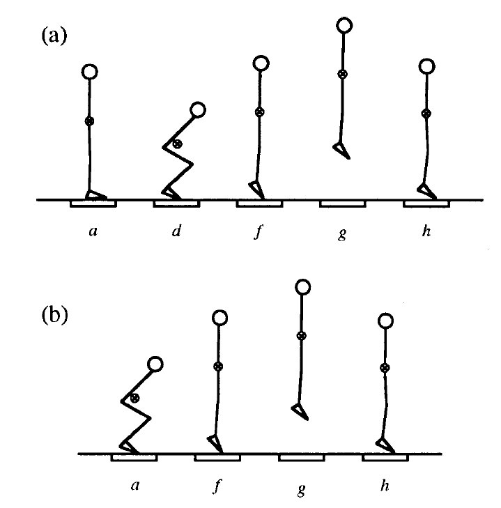
The jump: force
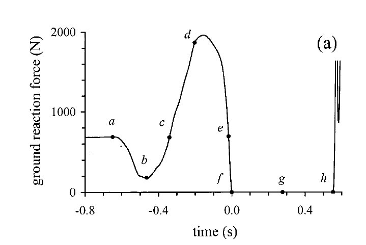
Linthorne, Am. J. Phys. 2001
The jump: velocity
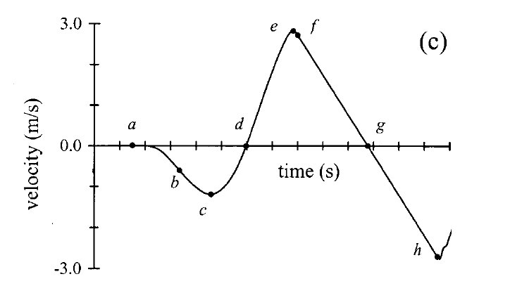
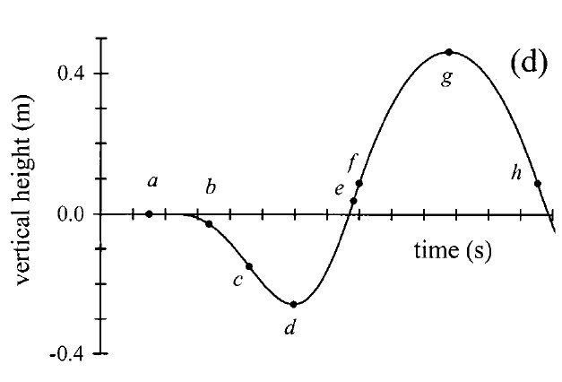
Linthorne, Am. J. Phys. 2001
Linear Kinetics
Example Problem
Using the force data of a jump from the following slides, If the jumper has a mass of 66.6 kg, what is his vertical velocity at the instant of take-off? What is the maximum height jumped?
First: subtract body weight
What is left is the net force
The three phases
- Weight > ground reaction force = negative change in momentum
- positive impulse which stops the downward motion and then, results in a positive change in momentum = vertical velocity that results in the jump.
- negative impulse slows the upward motion of the jumper just prior to take-off.
The height the individual jumps is determined by the net impulse: That is, the difference between the total positive impulse and the total negative impulse.
Why add up all three?
- So why do we add up the 3 different impulses?
- Why not just the positive one?
- We need to account for all of the prior impulse to determine what will happen
The first negative impulse has already given the jumper downward momentum. Part of the positive impulse is spent undoing it before any of it goes into going up.
Next: take the area of each phase
Next, we want to calculate the area under the force vs time graph (the impulse) for all three phases of the jump. We do this by multiplying each force data point by the time interval between points and then summing all areas (remember integral sum)
The three impulses
| 1st Negative Impulse | −86.6 N·s |
| Positive Impulse | 204.1 N·s |
| 2nd Negative Impulse | −15.0 N·s |
| Net Impulse | 102.5 N·s |
Linear Kinetics
Example Problem (continued)
- since impulse is equal to the change in momentum, we can think of the jump in this way:
Ft = (mv)2 − (mv)1
- since the mass of the jumper doesn’t change, we can factor it out to simplify the equation:
Ft = m(v2 – v1)
Linear Kinetics
Example Problem (continued)
we know that the jumper begins at rest (v1 = 0); therefore,
Ft = m(v2 – 0)
Ft = mv2
102.5 N·s = (66.6 kg) v2
v2 = 1.54 m/s
where v2 is the velocity the instant before take-off. The 102.5 N·s is the net impulse.
Linear Kinetics
Example Problem (continued)
to calculate the maximum height jumped, we have to use one of the Equations of Constant Acceleration (we will cover this in projectile motion)
vy(t) = −9.81t + voy
at the maximum height, the jumper will be at rest (vf = 0)
0 = −9.81t + 1.54 → t = 0.157
dy(t) = (−9.81/2)t² + voyt + doy
dy(t) = (−4.905)(0.157)² + (1.54)(0.157) + 0
dy(t) = −0.12 + 0.24
dy(t) = 0.12 m
The jumper’s vertical velocity at the instant of take-off was 1.54 m/s and the maximum height reached was 0.12 m (or 12 cm).
The whole calculation
Reading activity off a force profile
Understanding impulse/momentum and how it relates to the force time graph gives us the ability to interpret activity from the force profiles.

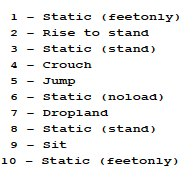
Headon and Curwen 2001 · Stand, Sit, Drop-landing, Jump, Crouch, Rise to stand, partial weight (feet only), unloaded
Reading activity off a force profile
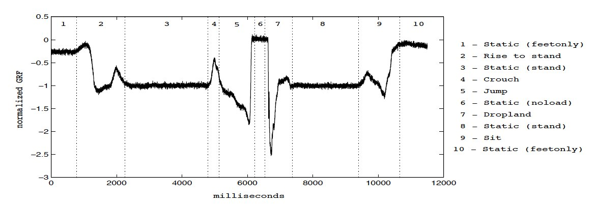
Headon and Curwen 2001 · Stand, Sit, Drop-landing, Jump, Crouch, Rise to stand, partial weight (feet only), unloaded
Name the activity
Friction
Friction: The force resisting the relative motion of solid surfaces.
- Results from the interaction of the surface area of objects in contact
- Dry Friction — Static, kinetic
- Fluid
- Lubricated
- Skin
- Internal
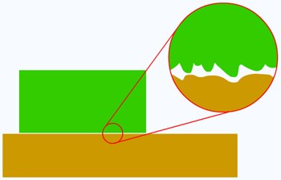
Friction
Friction is important when considering interaction and mobility of the whole body with the surroundings as well as proper functioning of internal anatomical structures.
Tribology – the science and engineering of interacting surfaces in relative motion
Static Friction
- a force that acts at the surface of contact between two bodies opposite in the direction of motion or impending motion
- consider a crate sitting on the ground:
- when a small force is applied to one side of the crate, it remains motionless
- the force that opposes the applied force pushing the box forward is the force of static friction
Fapplied ⟷ Fsfr
Static Friction
- as Fapplied increases, Fsfr increases until a critical point is reached
- at the critical point, Fsfr is called the force of maximum static friction (Fmsfr)
- if Fapplied increases further, the box will begin to slide
Static Friction
Fmsfr = μsN
where:
- μs is the coefficient of static friction
- N is the force that is normal (perpendicular) to the surface of contact
- Fmsfr is the force of maximum static friction
the coefficient of friction indicates the ease of sliding — the greater μ, the less easily one surface will slide on another
Static Friction
- the normal force (N) is equal but opposite the component of the object’s weight acting perpendicular to the surface on which the object is sitting
- The force of friction acts parallel to the surface
mg = −N
| Approximate Coefficients of Static Friction (dry) | |
|---|---|
| steel & steel | 0.8 |
| glass & glass | 0.94 |
| concrete & rubber | 1.0 |
| steel & ice | 0.005 |
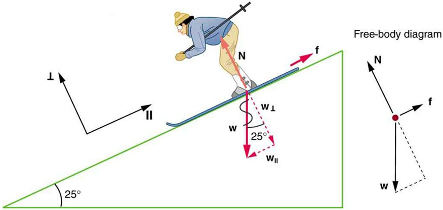
Kinetic Friction
- once the box is in motion the frictional force acting on the box is called kinetic friction (Fkfr)
- as Fapplied continues to increase, Fkfr remains constant
Fkfr = μkN
where:
- μk is the coefficient of kinetic friction
- N is the force that is normal (perpendicular) to the surface of contact
- Fkfr is the force of kinetic friction
Static and kinetic friction together
Friction
Example Problem
The coefficient of static friction between a 90 N curling rock and the ice is 0.3 and the coefficient of kinetic friction is 0.05. How much force is required to start the rock in motion? How much force is required to keep the rock in motion?
Friction
Solution
in this question, we are given: μs = 0.3, μk = 0.05, N = 90 N
first, calculate the force of maximum static friction:
Fmsfr = μsN = (0.3)(90 N) = 27 N
next, calculate the force of kinetic friction:
Fkfr = μkN = (0.05)(90 N) = 4.5 N
Just greater than 27 N are required to start the rock in motion and 4.5 N are required to keep it in motion.
Friction on a slope
- Remember from our forces lecture, we calculated the perpendicular, and parallel components of gravity on a slant surface
- The parallel component of gravity will tend to pull the block down the surface.
- Friction force is required to be equal and opposite of the parallel force or the block would slide down the slope
- Friction force is proportional to the normal force and acts perpendicular to it.
Components on any incline
For any incline of a certain angle the parallel and perpendicular components of force will be
Perpendicular Force Fpd = mg·(cos θ)
Normal Force N = −mg·(cos θ)
Parallel Force Fpl = mg·(sin θ)
Friction Force Ffr = −mg·(sin θ)
The perpendicular axis is the compression axis; the parallel axis is the shear axis.
Friction and the normal force are the reactions: each one is equal and opposite to the component of gravity along its own axis.
Worked example: 4 kg at 20°
How to determine the force of friction on a slant surface. We need to know the angle of the slant (20°) and the mass of the object (4 kg).
- Draw a diagram — the axis system, and all known and to be determined forces
- Solve for the magnitude of the force of gravity
W = mg = 4 kg × −9.81 m/s² = −39.24 N - Solve for the direction of the force of gravity relative to the axis system
- Solve for the parallel and perpendicular components of force
Worked example: the components
4th — Solve for the parallel and perpendicular components of force
Parallel component
Opposite = H·sin20° = −39.24·sin20° = −13.42 N
Perpendicular component
adjacent = H·cos20° = −39.24·cos20° = −36.87 N
5th — Solve for the Normal and friction forces
Parallel component = 13.42 N
Friction force = −Fpl = −13.42 N
Perpendicular component = −36.87 N
Normal force = −Fpd = 36.87 N
Friction
Example Problem
An 80 kg hiker is standing on a sloped trail at an angle of 35° above horizontal. If the coefficient of static friction between the hiker’s boot and the trail is 0.83, does the hiker slip?
Friction
① Draw a free-body diagram
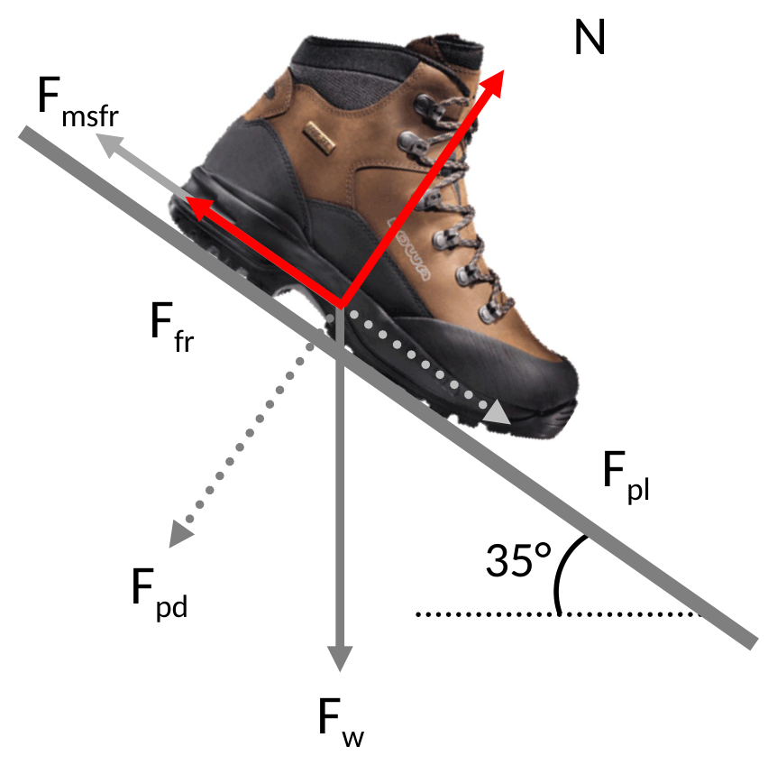
Friction
② Calculate the weight of the object, perpendicular and parallel forces of the object on the slope
Fw = mg
Fw = (80 kg)(−9.81 m/s²)
Fw = −784.8 N
Fpd = W (cos 35°)
Fpd = −642.9 N
Fpl = W (sin 35°)
Fpl = 450.1 N
Friction
③ Calculate the Normal and friction forces
N = −Fpd
N = −(−642.9 N)
N = 642.9 N
Ffr = −Fpl
Ffr = −(450.1 N)
Ffr = −450.1 N
This is the magnitude of frictional force required to maintain the boot on the slope
Friction
④ Calculate the maximum force of static friction
Fmsfr = μsN
Fmsfr = (0.83)(642.9 N)
Fmsfr = −533.607 N
Friction
⑤ Determine if the maximum force of static friction is greater than the friction force
Ffr = −450.1 N
Fmsfr = −533.6 N
Ffr < Fmsfr
Therefore, the hiker will not slip down the trail.
Friction
The same comparison, on a slope you can tilt
Friction application
Investigation of the Frictional Response of Osteoarthritic Human Tibiofemoral Joints and the Potential Beneficial Tribological Effect of Healthy Synovial Fluid
Caligaris et al. Osteoarthritis Cartilage. 2009 October; 17(10): 1327–1332.
This study tests the hypothesis that the natural progression of osteoarthritis (OA) in human joints leads to an increase in the friction coefficient and that healthy synovial fluid (SF) may help mitigate the increase in the friction coefficient in diseased joints.
Friction application
The friction coefficient of human tibiofemoral joints with varying degrees of OA was measured in healthy bovine SF and physiological buffered saline (PBS).
No statistical differences were found in the friction coefficient with increasing OA; however, the friction coefficient was significantly lower in SF than PBS in both configurations.
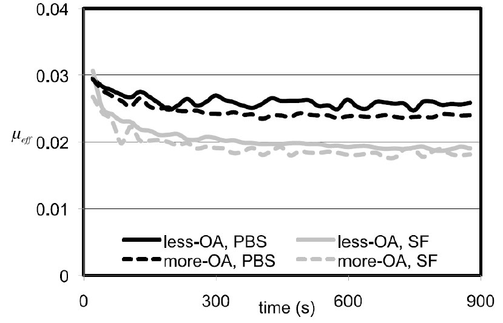
Summary
- Impulse = Force × time = the area under a force–time graph
- Ft = mΔv — an impulse causes a change in momentum. SI units N·s, and it is a vector
- Jump height is decided by the net impulse, not the positive one
- Static friction matches the applied force up to Fmsfr = μsN
- Kinetic friction is constant at Fkfr = μkN
- On a slope, friction must supply mg·sinθ while the normal force falls to mg·cosθ — sliding begins where tanθ = μs